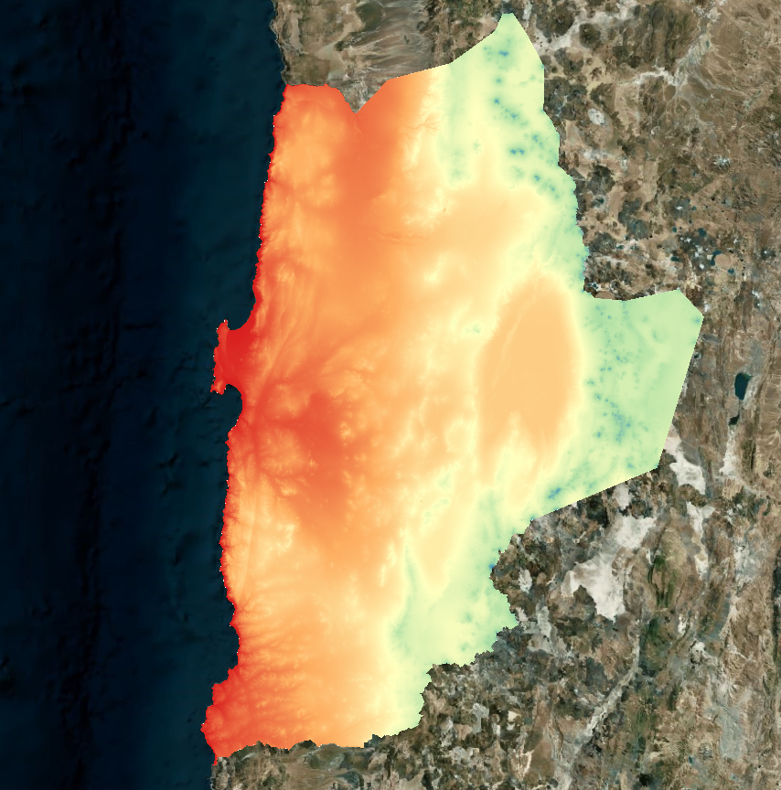

6 Data Geoespacial
6.1 Geometrías Base
La información espacial correspondientes definidas como variables utilizadas en la matriz de comparación de la etapa anterior, se encuentran en formato que pueden ser puntos o polígonos, que representan diferentes temáticas como por ejemplo Ambiental, Social, Infraestructura, Normativo, etc. A continuación se observan dos ejemplos de de información espacial de puntos y polígonos

6.2 Cálculo de Distancia en Raster
En esta etapa se procede a generar una grilla regular de una resolucuón espacial de 30x30 metros, y por cada tipo de geotría espacial se calcula la distancia de pada pixel a punto o polígono más cercanos.
El tipo de calculo para determinar la distancia es la eclidiana coorrespondiente a la ecuación Equation 6.1:
d(P_1, P_2) = \sqrt{(x_2-x_1)^2+(y_2-y_1)^2} \tag{6.1}
Como resultado de lo anterior se obtiene un raster de distancia como se observa en la figura Figure 6.2

6.3 Reclasificación
